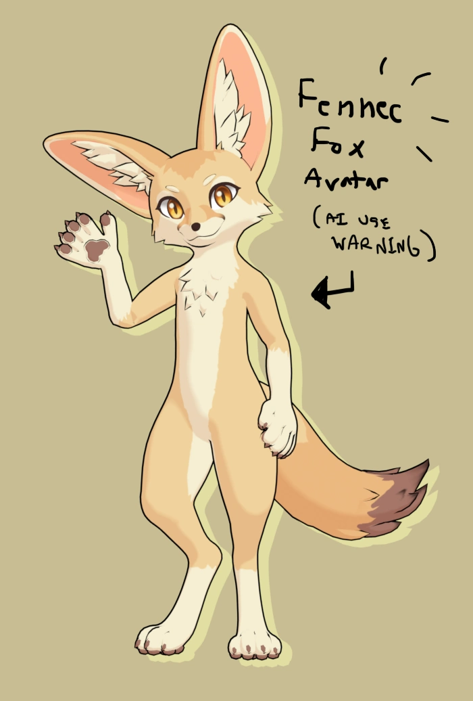
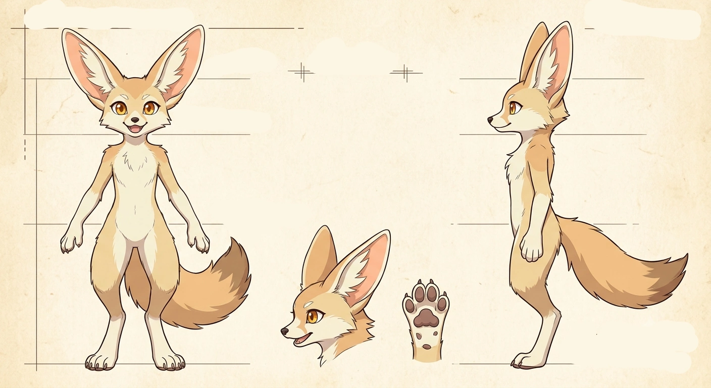
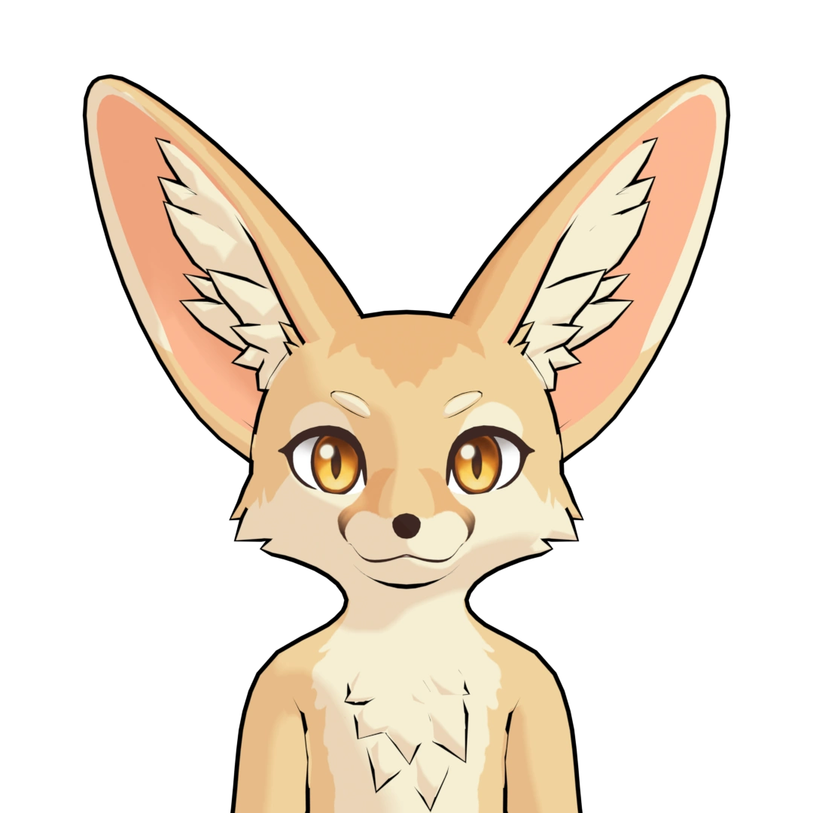
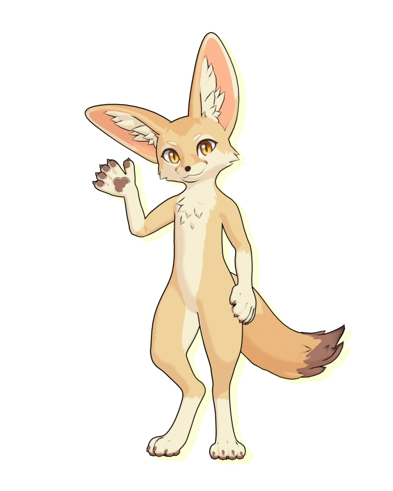
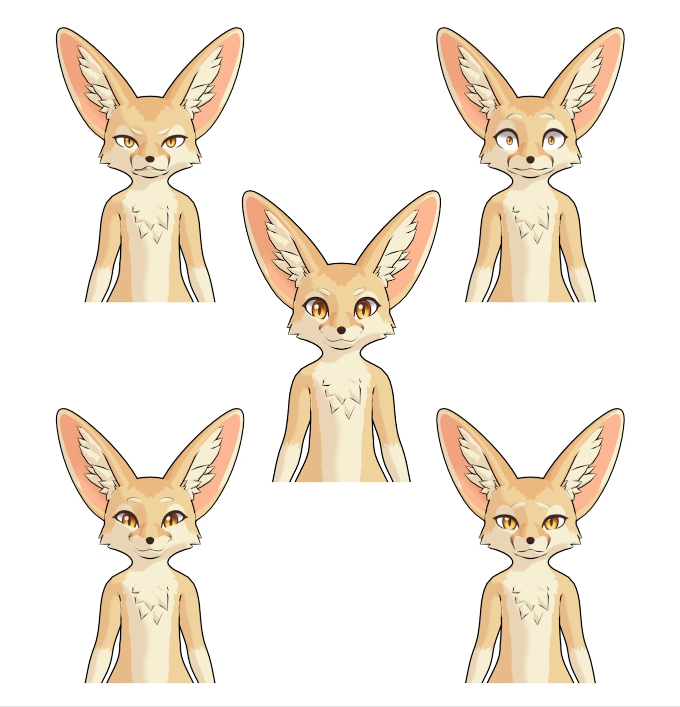
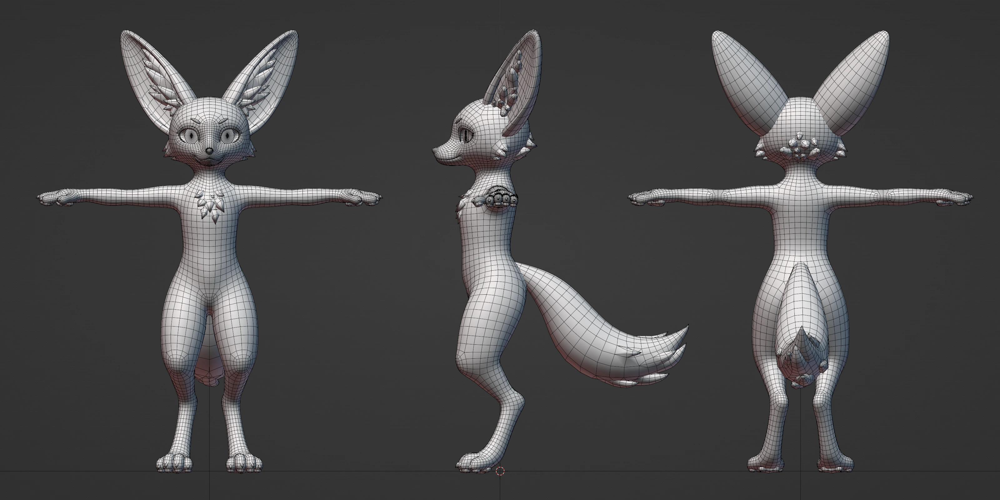
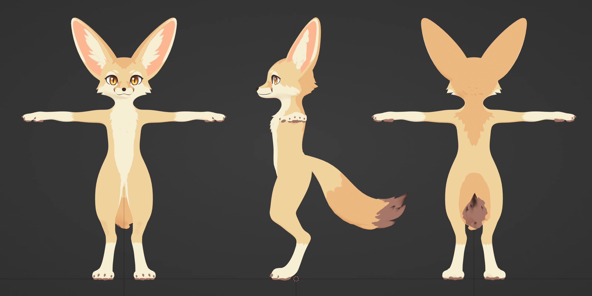

Page last updated: 9/28/2026

To be clear, the only AI generated part was the reference image. All actual modeling/texture/rigging work was done by me.
Very occasionally when I am bored, I mess around with Gemini + Nano Banana, which has a very generous free-tier.
My first reason is that I wanted to know if the AI could generate a consistent character reference sheet. And honestly, I actually think it looks pretty good. Yeah, it's a pretty generic looking character, but the refsheet was pretty easy to use and make a 3D model from. Which I found pretty impressive for an AI, which from what I understand, is pretty much running on mostly statistics and probabilities.

Reference image generated with Gemini. I erased the generated text because I found it cringey and a bit distracting.
The other reason why I used AI was that I wanted a throwaway character design that I could sell.
*INSERT SHOCKED NOISES*
OK, so hear me out... It takes me a very long time to make a character design that I am happy with. Which at that point, I kind of get attached to my design. And because I am selfish & greedy, I'd rather not give it to anyone and keep it all to myself.
I also kept having thoughts about money and how to make money, so I came up with the idea of making a premade VTuber/VRChat avatar and selling it. Of course, I realize that this is probably a bad idea. I do not want angry furries to come harass me for using AI, and also I don't play VRChat, so I actually don't know what VRChat people want.
I though about releasing to public domain, but I've decided to keep this model to myself. Mostly because I am a bit embarassed at the blendshape work (this was my first attempt at doing ARKit + Visemes + VSeeFace extra blendshapes. I overcomplicated things with my noob attempt at following this guide here).

Otherwise, I am pretty proud of it. I tried to make the textures easy to edit, by having symmetric parts be mirrored around the center. I also really like how the ear tufts and fur details turned out.



